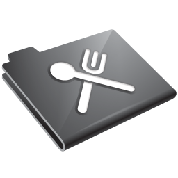
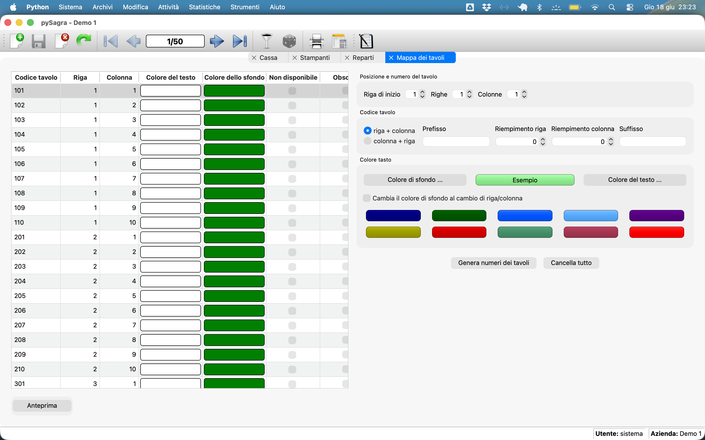

Documentazione su pySagra

Elenco degli argomenti:
Panoramica
Una delle caratteristiche folcloristiche di tutta l'Italia è
la presenza delle Sagre. Come chiarisce
wikipedia
la sagra è una festa popolare di carattere locale e cadenza annuale,
che nasce tradizionalmente da una festa religiosa, celebrata
in occasione di una consacrazione o per commemorare un santo
(in genere il santo patrono), ma anche utilizzata per festeggiare
il raccolto o promuovere un prodotto enogastronomico locale. Durante una
sagra hanno luogo in genere la fiera locale, il mercato e vari
festeggiamenti. Il luogo più importante della sagra, almeno
dal punto di vista culinario, è lo stand gastronomico.
pySagra nasce dall'esigenza di gestire lo stand gastronomico
della sagra del mio paese. L'attività da gestire parte dalla
rilevazione degli ordini dei prodotti, tipicamente primi piatti,
secondi, bevande, ecc. e la successiva distribuzione delle comande,
veri e propri ordini di produzione, ai vari reparti dello stand,
ad esempio bar, cucina, ma anche pizzeria, gelateria, ecc.
L'inserimento degli ordini avviene nelle casse e deve essere il più
rapido e semplice possibile. Una volta inserito, l'ordine
viene suddiviso per reparto e diramato ai reparti interessati.
La gestione dell'evasione degli ordini e delle scorte dei prodotti è
normalmente superflua per il tipo di attività svolta che
privilegia la velocità di gestione dell'ordine e della consegna delle pietanze.
A fine giornata o al termine della sagra si verificano i risutati
tramite un riepilogo degli incassi e varie statistiche di
vendita e consumi.
Il programma permette di gestire tutti questi aspetti, dal caricamento
dell'ordine alla consegna dei prodotti ed alle statistiche finali.
Le caratteristiche dell'applicazione di possono riassumere
nei seguenti punti:
- Gestione degli eventi: tutte le operazioni vengono sempre
riferite ad uno specifico evento (es. Sagra del Peperone,
Festa della birra, ecc.).
- Gestione dei reparti (es. Bar, Cucina, Pizzeria, ecc.).
Alcuni reparti possono esere non disponibili per specifici eventi.
- Gestione degli articoli di vendita e consumo, distinguendoli
in articoli elementari, kit - articoli composti (es. tris:
salsicce + costicine + braciola) e menù - raggruppamenti
di articoli di vari reparti (es. menù sagra: birra + tris
+ patate fritte). I kit devono essere composti da soli
articoli elementari. I menù possono contenere kit.
- Gestione delle varianti degli articoli (es. pizza
margherita senza mozzarella, con salamino, ecc.). La variante
puó prevedere una maggiorazione di prezzo.
- Gestione della consegna al tavolo o per asporto.
- Controllo giacenza: per gli articoli elementari
che interessa monitorare è possibile inserire la
scorta disponibile. Il programma aggiorna automaticamente la
disponibilità in base alle vendite effettuate ed ai
consumi conseguenti.
- Controllo del ordinato - consegnato: per gli
articoli che interessa monitorare è possibile tracciare
la quantità impegnata e la successiva consegna gestendo anche
l'evasione dell'ordine. Il programma aggiorna automaticamente lo
stato dell'ordine (inserito, in lavorazione, evaso) in base alle
consegne effettuate.
- Gestione degli ordini di vendita tramite una maschera
di caricamento ottimizzata e finalizzata al raggiungimento della
massima velocità di inserimento. Controllo dell'esistenza del
tavolo indicato. Possibilità di selezionare il tavolo da
una lista-mappa dei tavoli esistenti. Controllo della
disponibilità degli articoli inseriti considerando i
componenti per i kit ed i menù. Calcolo automatico di
totale ordine, importo incassato, eventuale sconto a valore
(es. buoni), resto, ecc. Visualizzazione delle varianti possibili.
- Possibilità di inserire note per reparto
- Gli ordini possono essere inseriti anche in un'applicazione
web che genera un QR Code inseribile in cassa per l'acquisizione veloce
e seguito solo dal pagamento.
- Generazione della stampa dell'ordine per il cliente,
stampe specifiche per i vari reparti interessati ed una per i
soli coperti. Tutte queste stampe sono opzionali e disponibili in vari formati
- Stampa dell'incassato per giorno e mezza giornata
- Visualizzazione e stampa continua della disponibilità
degli articoli o dei componenti di kit e menù.
- Gestione di varie statistiche di vendita e comsuni anche
confrontando eventi e periodi diversi
- Tutti gli archivi (eventi, reparti, articoli,
ecc.) e le statistiche disponibili sono visualizzabili,
stampabili in formato A4 ed esportabili in CSV/Excel
- L'applicazione è multipiattaforma: sviluppata e testata
su Mac OSX e Windows, dovrebbe funzionare correttamente anche su Linux.
Inizio pagina
Architettura dell'applicazione
Questo programma è stato sviluppato avendo in mente
alcuni specifici obiettivi:
- Realizzare un applicazione con interfaccia grafica e basata su
un database server SQL
- Realizzare un applicazione multiutente con architettura
client/server
- L'applicazione deve essere multipiattaforma e disponibile
a basso/nessun costo a chiunque la richieda
Per la realizzazione di questo applicativo in base alle premesse
precedenti sono stati scelti questi strumenti:
- il linguaggio di programmazione Python
nella versione 3.14
- le librerie Qt in versione 6.x
- il binding alle librerie Qt Qt for Python in versione 6.x
- Il server di database PostgreSQL nella versione
18.x o successiva
- Il connettore a PostgreSQL per Python Psycopg nella versione
3.3.x o successiva
- il set di icone predefinito è oxygen
ma sono disponibili anche altri iconpaks scaricati da
Iconarchive
- l'icona di pySagra fa parte del DelliOS System Icons set
di dellustrations.com
Tutti gli strumenti elencati sono multipiattaforma e
disponibili gratuitamente
Inizio pagina
Interfaccia utente
L'intefacia utente dell'applicazione:

Procedura di accesso
Articoli
Inizio pagina